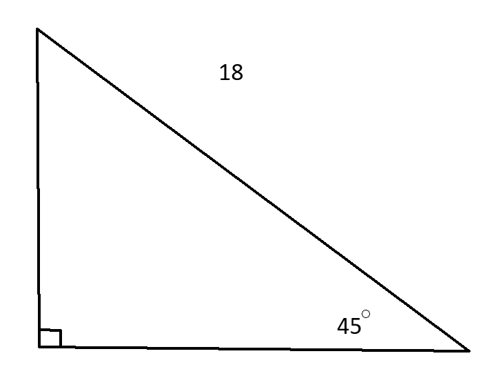
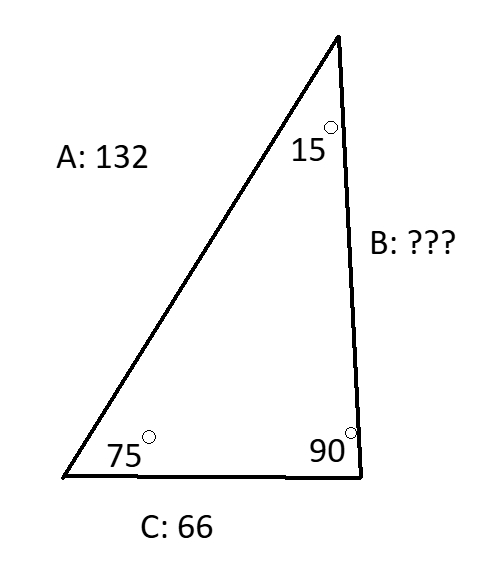

Cosine, Sine, Tangent
Introduction
In Trigonometry, three main ratios are in trigonometry and are basically the foundation in it. They are Cosine, Sine and
Tangent. They are ratios that change depending on the quotients of the three sides of triangles, the adjacent, the opposite and
the hypotenuse.
Sine (Sin)
Sine is one of the three trigonometric ratios. Sine is used to find unknown sides and angles. Sine equals the opposite side over the hypotenuse…
 Since the opposite side is already known, we can just divide 5 by the square root of 44…
Since the opposite side is already known, we can just divide 5 by the square root of 44…
5 over the square root of 44 is approximately 0.75377…
Law of Sines
The law of sines is a formula that can be used to find the unknown sides of a triangle with one side already shown with sine…
a - length of side a
sin(A) - Sine of Angle A
b - length of side b
sin(B) - Sine of Angle B
c - length of side c
sin(C) - Sine of Angle C
An example of when this formula can be used is when you need to find the missing sides/angles of a triangle…

This example triangle’s hypotenuse length is 18 while the only known angle is 45°. When finding sin, it's the opposite side's length is over the hypotenuse's length. So by using sine, we can figure out the opposite side of the triangle which is the straight line up. First we can put the sine of 45°…
sin 45° = ???
Now we multiply the sine of 45° with the length of the hypotenuse in the triangle…
Now the sine of 45° times 18 equals = 12.7279 but to keep it simple, we’re going to round it to the nearest tenth…
Opposite ≈ 12.7
The length of the opposite is 12.7.
 Now to find an unknown angle of a triangle with sine…
Now to find an unknown angle of a triangle with sine…
 To find a missing angle, you would have to use the values that you know from the triangle to try and find the missing angle of a triangle using sine. For example we have two sides and one angle known here, we are trying to find angle A. We already know angle A and the side lengths of a and c, so we can plug those values into the Law of Sines formula...
To find a missing angle, you would have to use the values that you know from the triangle to try and find the missing angle of a triangle using sine. For example we have two sides and one angle known here, we are trying to find angle A. We already know angle A and the side lengths of a and c, so we can plug those values into the Law of Sines formula...
sin(C) / 28 = sin(A) / 14
Next we multiply both sides by 14 to get sin(A) on its own…
sin(40°) / 2 = sin(A)
The sine of 40° divided by 2 equals 0.3214...
0.3214 = sin A
The sine of angle A equals 0.3214. Now this is when arcsin is used. Arcsin is the inverse function of sine, so angle A equals the arcsin of 0.3214…
∠A = arcsin(0.3214)
Now we calculate...
∠A = 0.3272 rad
∠A = (0.3272 * 57.3)°
∠A = 18.74856°
So angle A has a measure of approximately 18.74856° or 18.7° when rounded to the nearest tenth...

Cosine (Cos)
Cosine is another trigonometry ratio that is commonly used to find angles and sides in a triangle like sine. But unlike cosine, it is calculated with the adjacent side divided by the hypotenuse instead of the opposite side…
The Law of Cosines
The law of cosines is used to find any side in a triangle using the formulas…
The length of side c is equal to the square root of side a and b squared and added together minus twice the length of side a and b times the cosine of the opposite of angle c. (also as gamma but will be mentioned later). This may seem a lot for one side but an example would clear some things up…

We can substitute some value in this problem into the law of cosines formula…
The length of side c is 28.16 (approximately), you would most definitely need a calculator to find side c using this formula.
The law of cosines can also be used to find sides a and b as well with different formulas…
Lets use another example...

We can already substitute some values in…
For side b...

The formula for finding side b…
The cosine of 75° is 0.2588
Tangent
Tangent is another main trigonometry ratio. Its formula is the opposite side over the adjacent side…
Let's say that a triangle has two known sides, being the opposite and the adjacent...
Opposite = 12 in
Adjacent = 8 in
Twelve over Eight is 1.5.
tan = 12 / 8 = 1.5
Tan also has other formulas...
Cosine, Sin, Tan, Pi Chart
| Cosine(θ) |
Sine(θ) |
Tangent(θ) |
Angle(θ) |
Radians(θ) |
| 1 |
0 |
0 |
0° |
0 |
| √ 3 / 2 |
√ 3 / 2 |
1 / √ 3 |
30° |
π / 6 |
| √ 2 / 2 |
1 / √ 2 |
1 |
45° |
π / 4 |
| 1/2 |
√ 3 / 2 |
√ 3 |
60° |
π / 3 |
| 0 |
1 |
undefined |
90° |
π / 2 |
| -1 / 2 |
√ 3 / 2 |
-√ 3 |
120° |
2π / 3 |
| - √ 3 / 2 |
1 / 2 |
-1 √ 3 |
150° |
5π / 6 |
| -1 |
0 |
0 √ 3 |
180° |
π |